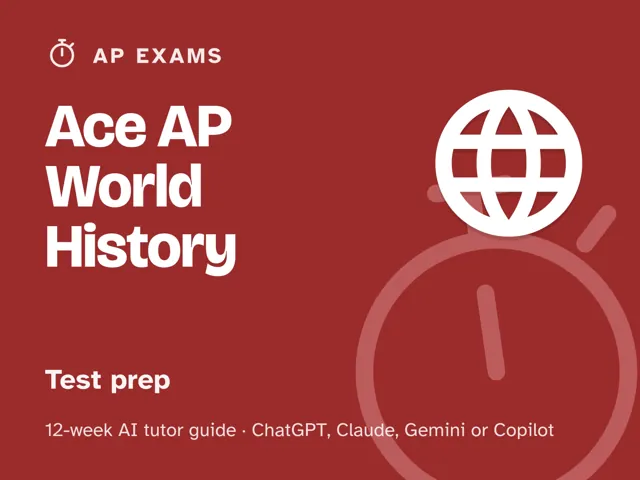

Ace AP World History
$29Instant download: a PDF to read, a browser copy, and the AI-tutor file you hand straight to any AI assistant.Buy it on Etsy →
Take the free placement check first: 15 minutes, and it names the week to start at.
Stop re-skimming the same timeline and hoping it sticks. This 12-week plan starts with an honest diagnostic that maps your Multiple Choice, Short Answer, Document-Based Question, and Long Essay skills into solid, shaky, and missing, then spends the middle weeks drilling exactly the gaps that map found, with an AI tutor that diagnoses before it teaches and never just hands you a finished thesis or paragraph. The last four weeks are full, timed practice with a review of every miss and every lost rubric point, ending in a dress rehearsal and an honest score estimate. Built for the May 2027 exam format: all three short-answer questions required and one required long essay, on the fully digital Bluebook exam (digital since May 2025). No official test content, no score guarantees, just a real plan, real rubric literacy, and a coach that keeps you honest.
What you get
This is a deep, digital guide: a fully scripted set of 12 ready-to-run weekly sessions, most about 60 minutes; the timed-practice weeks 9-12 run longer, up to a full-length practice exam. You lead the session: every step is timed and the tutor instructions are already written out for you; no prior AI experience or subject expertise needed. - 12 weekly sessions (~60 minutes for weeks 1-8, longer for the timed weeks 9-12), each with a plain-language concept, a concrete worked example, a minute-by-minute session plan with the AI-tutor prompts built in, a "show me" checkpoint, common mistakes to watch for, and practice. - A "Never used an AI chat assistant? Start here" onboarding that takes a complete beginner from zero to ready in about five minutes, using a free AI assistant (no paid plan needed). - An orientation that sets the weekly rhythm and the one rule that makes this work: review every miss and every lost rubric point until you can explain the "why," not just what the stronger answer or essay would have been. - Four rescue prompts in the front matter: a reset for when you're frustrated, a guardrail for when the AI starts writing your thesis or essay for you, a plateau-breaker for when a score or rubric row stalls, and an understanding check that makes you explain the why behind every miss. - A personal gap map you build in week 1 and revisit in week 12 to see exactly what moved.
The 12 weeks
- The Diagnostic: Your Real Starting Line
- Meet the Exam and Its Thinking Skills
- Periodization and the Six Themes
- Comparing Societies Across Regions
- Short-Answer Questions: Precise and Fast
- The Document-Based Question: Sourcing and Argument
- The Long Essay: Argument Without a Document Set
- Multiple-Choice Strategy and Stimulus Reading
- Efficient Era Review + Timed Practice #1: Multiple Choice
- Timed Practice #2: Short Answer and the DBQ
- Timed Practice #3: The Long Essay and a Full Free-Response Set
- Full Dress Rehearsal and the Plan Ahead
Who it's for
Students taking AP World History: Modern who want a real plan instead of a stack of random practice questions. It's self-directed (built to be run by the student) and works whether you're starting from a strong base or feel behind on comparison, the DBQ, or timed writing.
Why this instead of a free chatbot
A raw chatbot will happily write your thesis for you, which feels productive but teaches you nothing and won't be there on test day. This pack ships what a chatbot alone lacks: an up-front diagnosis that tells you which of the four sections (and which era) to fix first, a structured 12-week progression instead of random review sheets, real timed practice under section and essay time limits (not untimed noodling), and a forced review of every miss and every lost rubric point for the underlying cause: content gap, weak sourcing, generic evidence, or timing. A review book gives you the same practice set regardless of what you actually need; this pack adapts to your gap map.
FAQ
- Is this official College Board or AP content? No. This pack is not affiliated with, endorsed by, or connected to the College Board, the AP Program, or any other test maker, and it contains no official or leaked test content. Use it alongside official materials (AP Classroom, released free-response questions and rubrics, official practice exams) as your source of truth for real questions and the current format.
- Will this guarantee a certain score? No. No pack, book, or tutor can guarantee a score, AP credit, or an admission outcome, and this one won't claim to. What it offers is an honest diagnostic, focused practice on your actual gaps, and real timed review against the real rubric; the result depends on the work you put in.
- Is it up to date? Yes. It teaches the format starting with the May 2027 exam: all three short-answer questions are required and built on sources, and the long essay is one required prompt. The whole exam is typed in the Bluebook app, as it has been since May 2025. Confirm the current format and your exam date on the official College Board site before test day.
- Which AI does it use? Any modern AI chat assistant: ChatGPT, Claude, Copilot, or Gemini. The free version of any of these is enough; no paid plan required. Never used one before? The guide's first section walks complete beginners through setup in about five minutes.
- Do I need to already know my score or which section I'm bad at? No. Week 1 is the diagnostic. You start wherever you actually are, not where you assume you are.
- What if my essay score plateaus? The guide includes a plateau prompt built for exactly this: it changes the approach and targets your specific error pattern instead of repeating the same drills.
- Refunds? Standard marketplace refund policy applies.
$29Instant download: a PDF to read, a browser copy, and the AI-tutor file you hand straight to any AI assistant.Buy it on Etsy →